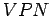
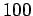
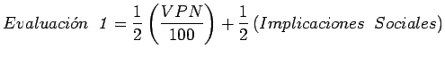
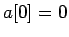
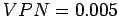
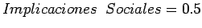
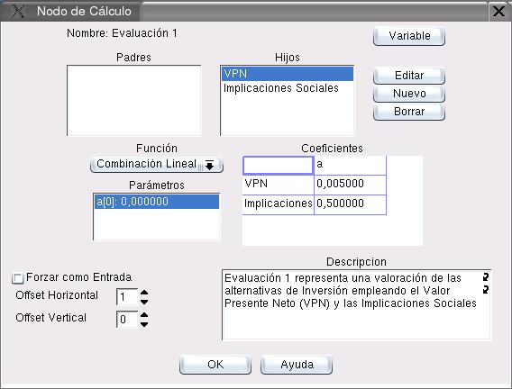

Proponemos calcular la variable Evaluacion 1 mediante un promedio ponderado simple de las variables VPN e Implicaciones Sociales. Teniendo en cuenta que el rango de la variable  es de 0 a , mientras que el rango de las otras dos es de 0 a , construimos la Función de Razonamiento Aproximado:

Para implementar esta función en Fuzzynet, editamos el Nodo de Cálculo correpondiente a Evaluación 1. Este nodo ya tiene definidos los dos nodos hijos VPN eImplicaciones Sociales; Seleccionamos el tipo de función Combinación Lineal y asignamos los siguientes parámetros:
-  (La combinación lineal no tiene offset)
-  (El coeficiente correspondiente a
-
 (El coeficiente correspondiente a Implicaciones Sociales
La figura 11.11 muestra el cuadro de diálogo resultante.
Figura 11.11:
Nodo de Cálculo Evaluación 1 con la función de razonamiento aproximado definida
|

|
Oscar Duarte
2005-05-01